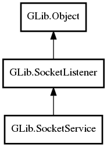

GLib.SocketService Reference Manual
Packages
gio-2.0
GLib
SocketService
SocketService
is_active
start
stop
incoming
SocketService
Object Hierarchy:

Description:
public
class
SocketService
:
SocketListener
All known sub-classes:
ThreadedSocketService
Namespace:
GLib
Package:
gio-2.0
Content:
Creation methods:
public
SocketService
()
Methods:
public
bool
is_active
()
public
void
start
()
public
void
stop
()
Signals:
public
virtual
signal
bool
incoming
(
SocketConnection
connection,
Object
? source_object)